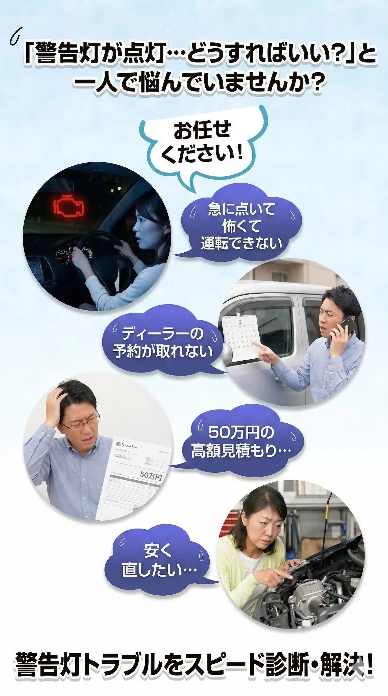
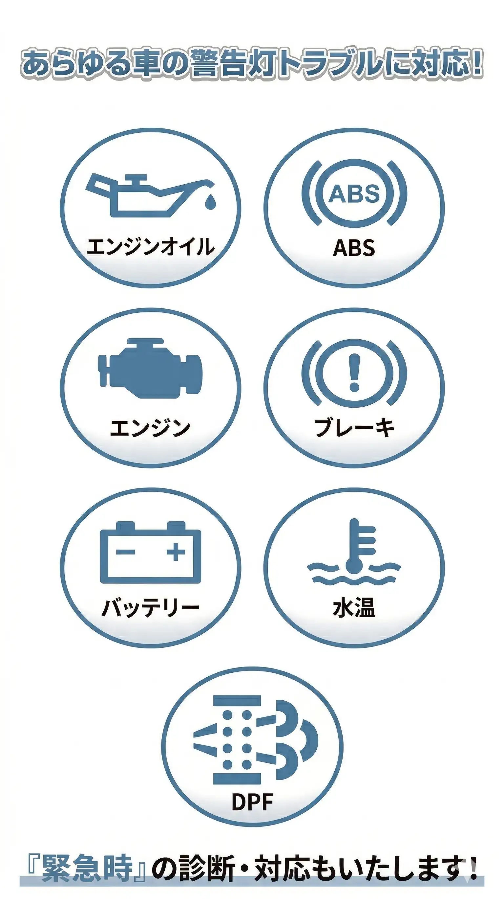
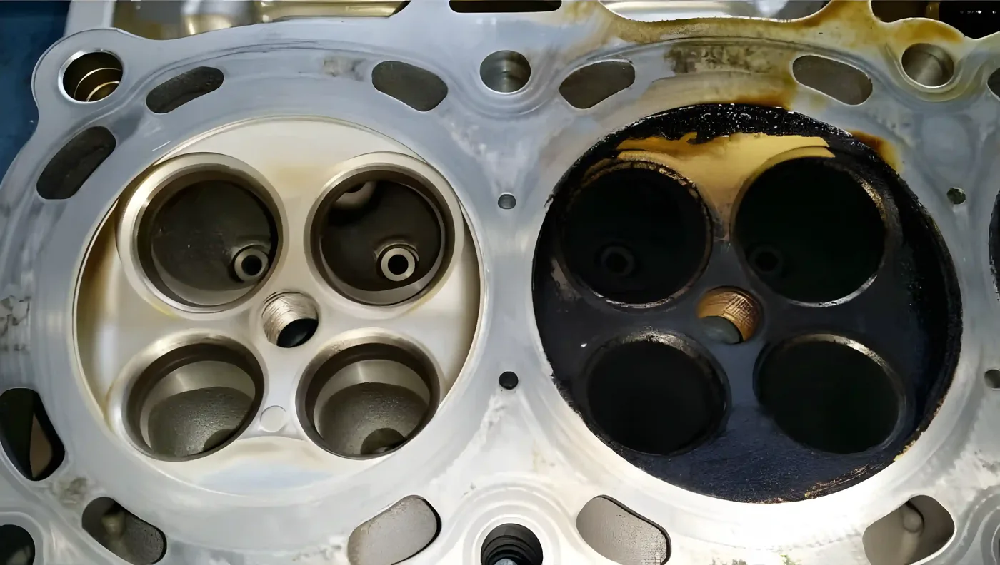
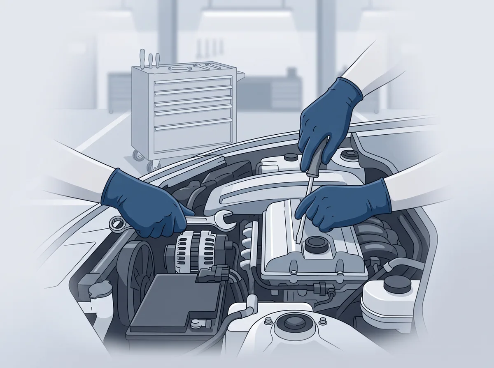
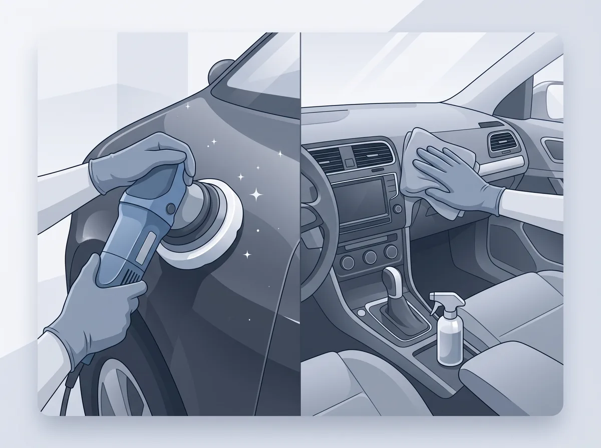
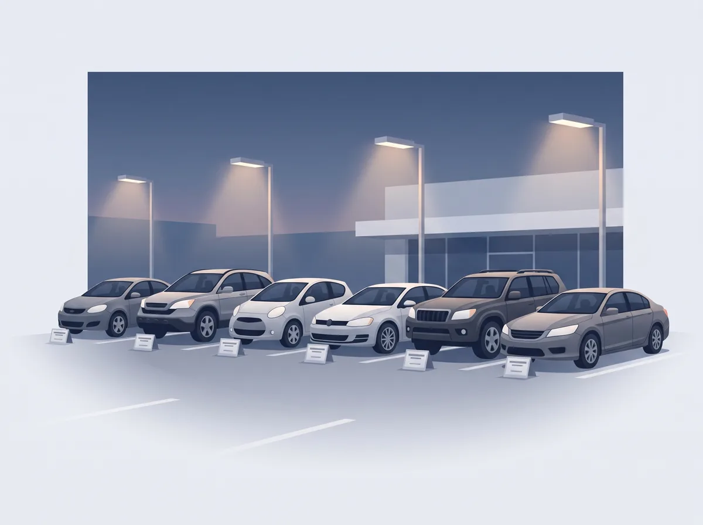
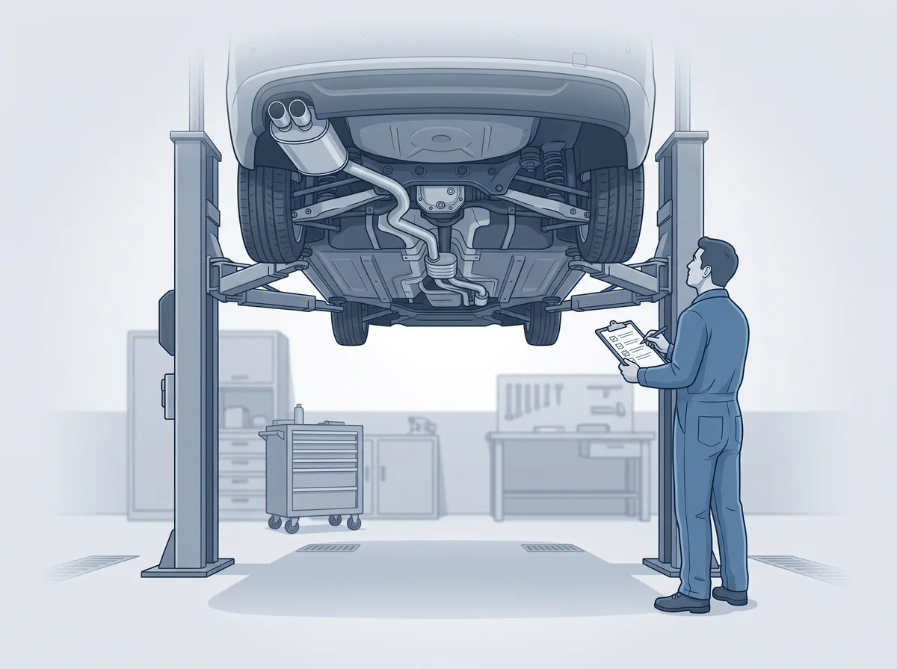
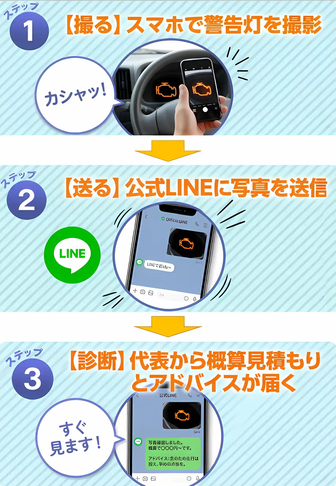

放置して症状が進むほど、費用も期間も大きくなります。
まずは強制再生・診断からスタートし、可能な限りドライアイス洗浄で解決を目指します。
| 症状 | 対応内容 | 期間 | 費用目安 |
|---|---|---|---|
| ① 軽度 | 診断機で強制再生。復活しない場合は原因を調査し、該当箇所を修理（この段階でドライアイス洗浄をご提案） | 1〜3日 | 10万〜20万円※エンジン・インテークの状態により変動 |
| ② 中度 | 分解整備でアクセスし、ドライアイス洗浄で復活を試みます（新車時の走りが戻るケースも） | 2〜5日 | 4万〜8万円〜※分解整備費は別途。復活すれば総額2万〜15万円程度 |
| ③ 重度 | 洗浄でも改善しない場合は外注での本体清掃、またはDPF本体交換・エンジンリビルト | 15日〜1ヶ月 | 交換 50万〜80万円※ディーラーでの部品交換と同水準 |
※費用・期間は車種や状態により異なります。正式なお見積りは診断後にご提示します。
ドライアイス洗浄（イメージ）

警告灯のご相談はもちろん、お車に関することは何でもご相談ください。
7万円〜
写真1枚をLINEで送るだけ、最短5分で概算診断。ディーラー交換の1/7程度の費用で解決できることも。
国産車・輸入車・カスタムカー対応
オイル交換から重整備まで、国家整備士が幅広く対応します。

2万円〜
洗車・コーティング・室内クリーニングで愛車をリフレッシュ。

30万円〜
整備士が厳選した安心の中古車をご紹介します。

法定整備費＋1.5万円
追加費用を抑えた明朗会計で、丁寧に検査・整備いたします。


整備歴25年、地域に根ざした施工実績